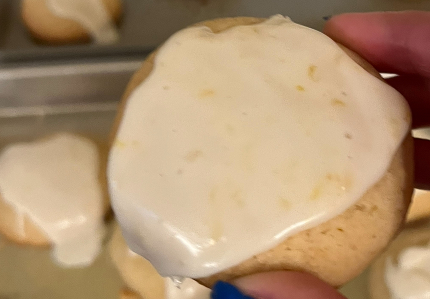

Lemon Cookies

Description
These delicious lemon cookies are made with lemon zest and a yummy lemon glaze.
With a delicate balance between the sweetness of the cookie and the tartness of
the lemon flavor, these are a scrumptious treat to share with family and (hypothetical) friends.
Ingredients
For the Cookies:
- 3 cups all-purpose flour
- 1 teaspoon baking powder
- 1/2 teaspoon baking soda
- 1/2 teaspoon salt
- 1 cup unsalted butter, softened
- 1 1/4 cups granulated white sugar
- 1 teaspoon vanilla extract
- 2 tablespoons lemon juice
- 1 tablespoon lemon zest
- 1 large egg (room temperature)
For the Icing:
- 2 cups confectioners' sugar
- 3-4 tablespoons lemon juice
- 2 teaspoons lemon zest
- 1/2 teaspoon vanilla extract
Steps
- Preheat and prepare cooking sheets. Preheat the oven to 375°F. Line two baking sheets with parchment paper (or lightly grease with non-stick cooking spray).
- Whisk dry ingredients together. In a medium bowl, whisk together flour, baking powder, baking soda, and salt. Set aside.
- Cream butter and sugar. In a large bowl using an electric mixer, cream together butter and sugar until light and fluffy, about 2 to 3 minutes.
- Add remaining wet ingredients. Add egg and beat to combine. Add vanilla, lemon juice, and lemon zest. Beat to combine. Scrape down bowl as needed.
- Add dry ingredients. Add flour mixture, and mix at low to medium speed just until no flour streaks remain.
- Scoop cookie dough. Using a cookie scoop, or tablespoon to portion into 1 1/2 inch balls. Place on prepared baking sheets, leaving about 2 inches between them.
- Bake and cool the cookies. Bake for 10 to 12 minutes. The edges will look done, but the center will still look slightly soft. Remove from the oven and cool on the baking sheets for 5 minutes before transferring to a wire rack to finish cooling completely.
- Make icing. In a small mixing bowl, combine icing ingredients. With an offset spatula, ice the top of each cookie. Adjust consistency if needed.
Source
For more inspiration, check out Boston Girl Bakes who created this recipe.